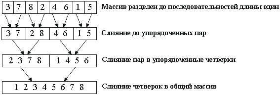
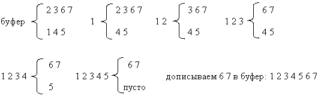

Сортировка слиянием
Сортировка слиянием также построена на принципе "разделяй-и-властвуй", однако реализует его несколько по-другому, нежели quickSort. А именно, вместо разделения по опорному элементу массив просто делится пополам.
// a - сортируемый массив, его левая граница lb, правая граница ub
template<class T>
void mergeSort(T a[], long lb, long ub) {
long split; // индекс, по которому делим массив
if (lb < ub) { // если есть более 1 элемента
split = (lb + ub)/2;
mergeSort(a, lb, split); // сортировать левую половину
mergeSort(a, split+1, last);// сортировать правую половину
merge(a, lb, split, ub); // слить результаты в общий массив
}
}
Функция merge на месте двух упорядоченных массивов a[lb]...a[split] и a[split+1]...a[ub] создает единый упорядоченный массив a[lb]...a[ub].
Пример работы алгоритма на массиве 3 7 8 2 4 6 1 5..
Рекурсивный алгоритм обходит получившееся дерево слияния в прямом порядке. Каждый уровень представляет собой проход сортировки слияния - операцию, полностью переписывающую массив.
Обратим внимание, что деление происходит до массива из единственного элемента. Такой массив можно считать упорядоченным, а значит, задача сводится к написанию функции слияния merge.
Один из способов состоит в слиянии двух упорядоченных последовательностей при помощи вспомогательного буфера, равного по размеру общему количеству имеющихся в них элементов. Элементы последовательностей будут перемещаться в этот буфер по одному за шаг.
merge ( упорядоченные последовательности A, B , буфер C ) {
пока A и B непусты {
cравнить первые элементы A и B
переместить наименьший в буфер
}
если в одной из последовательностей еще есть элементы
дописать их в конец буфера, сохраняя имеющийся порядок
}
Пример работы на последовательностях 2 3 6 7 и 1 4 5
 Результатом является упорядоченная последовательность, находящаяся в буфере. Каждая операция слияния требует n пересылок и n сравнений, где n - общее число элементов, так что время слияния: Theta(n).template<class T>
void merge(T a[], long lb, long split, long ub) {
// Слияние упорядоченных частей массива в буфер temp
// с дальнейшим переносом содержимого temp в a[lb]...a[ub]
// текущая позиция чтения из первой последовательности a[lb]...a[split]
long pos1=lb;
// текущая позиция чтения из второй последовательности a[split+1]...a[ub]
long pos2=split+1;
// текущая позиция записи в temp
long pos3=0;
T *temp = new T[ub-lb+1];
// идет слияние, пока есть хоть один элемент в каждой последовательности
while (pos1 <= split && pos2 <= ub) {
if (a[pos1] < a[pos2])
temp[pos3++] = a[pos1++];
else
temp[pos3++] = a[pos2++];
}
// одна последовательность закончилась -
// копировать остаток другой в конец буфера
while (pos2 <= ub) // пока вторая последовательность непуста
temp[pos3++] = a[pos2++];
while (pos1 <= split) // пока первая последовательность непуста
temp[pos3++] = a[pos1++];
// скопировать буфер temp в a[lb]...a[ub]
for (pos3 = 0; pos3 < ub-lb+1; pos3++)
a[lb+pos3] = temp[pos3];
delete temp[ub-lb+1];
}
Оценим быстродействие алгоритма: время работы определяется рекурсивной формулой T(n) = 2T(n/2) + Theta(n).
Ее решение: T(n) = n log n - результат весьма неплох, учитывая отсутствие "худшего случая". Однако, несмотря на хорошее общее быстродействие, у сортировки слиянием есть и серьезный минус: она требует Theta(n) памяти.
Хорошо запрограммированная внутренняя сортировка слиянием работает немного быстрее пирамидальной, но медленнее быстрой, при этом требуя много памяти под буфер. Поэтому mergeSort используют для упорядочения массивов, лишь если требуется устойчивость метода(которой нет ни у быстрой, ни у пирамидальной сортировок).
Сортировка слиянием является одним из наиболее эффективных методов для односвязных списков и файлов, когда есть лишь последовательный доступ к элементам.